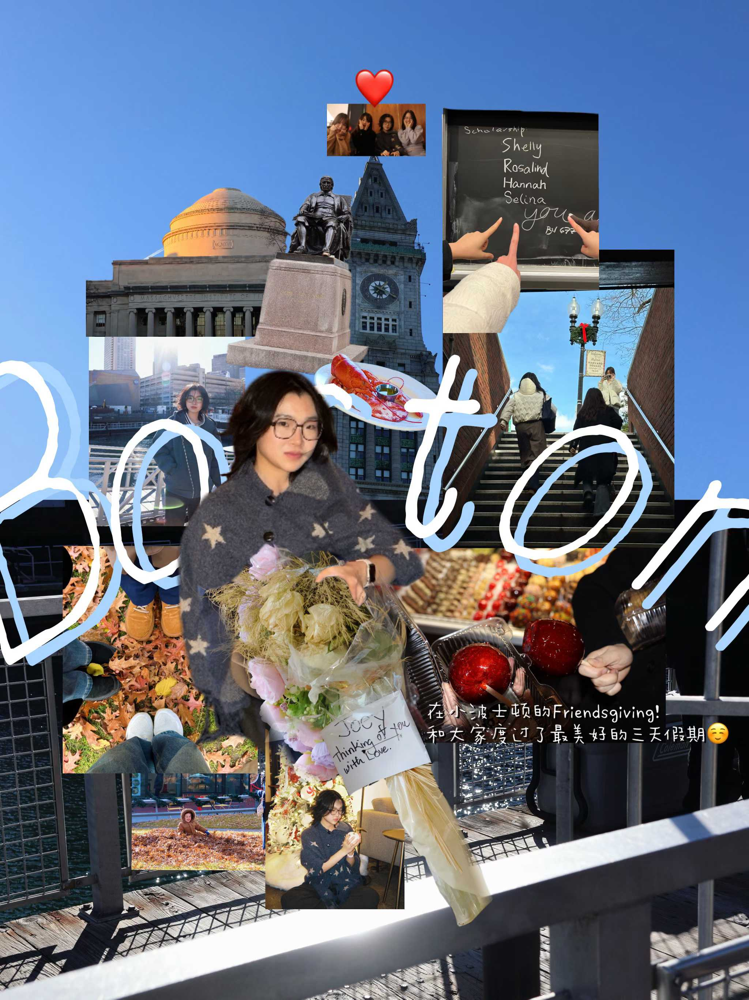
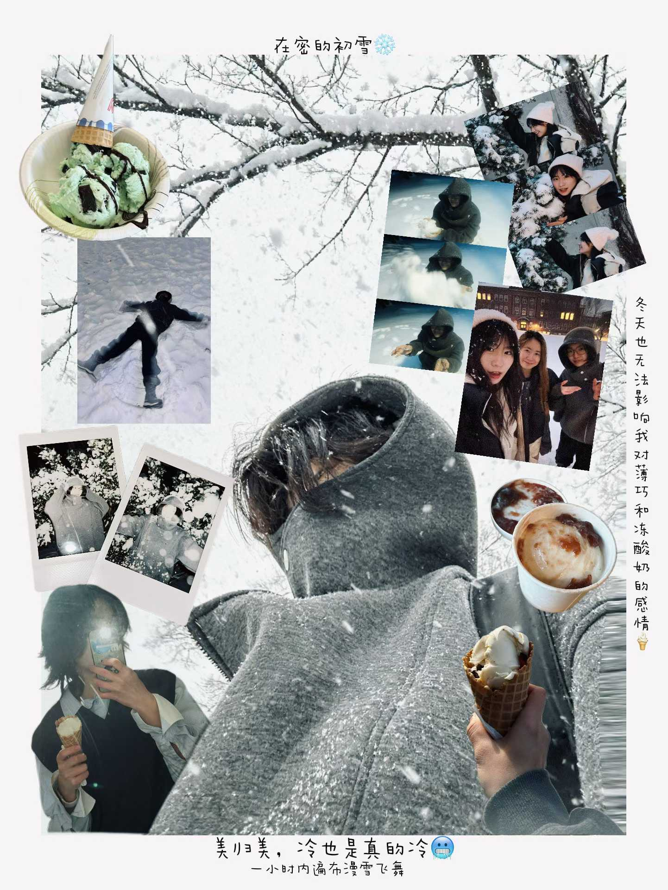
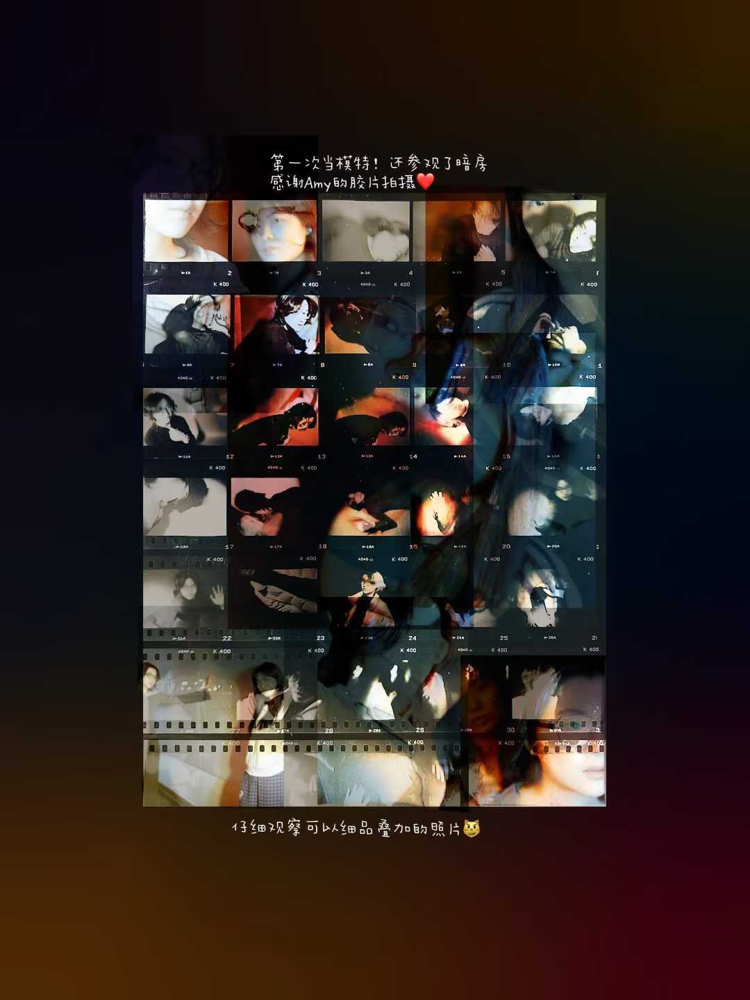
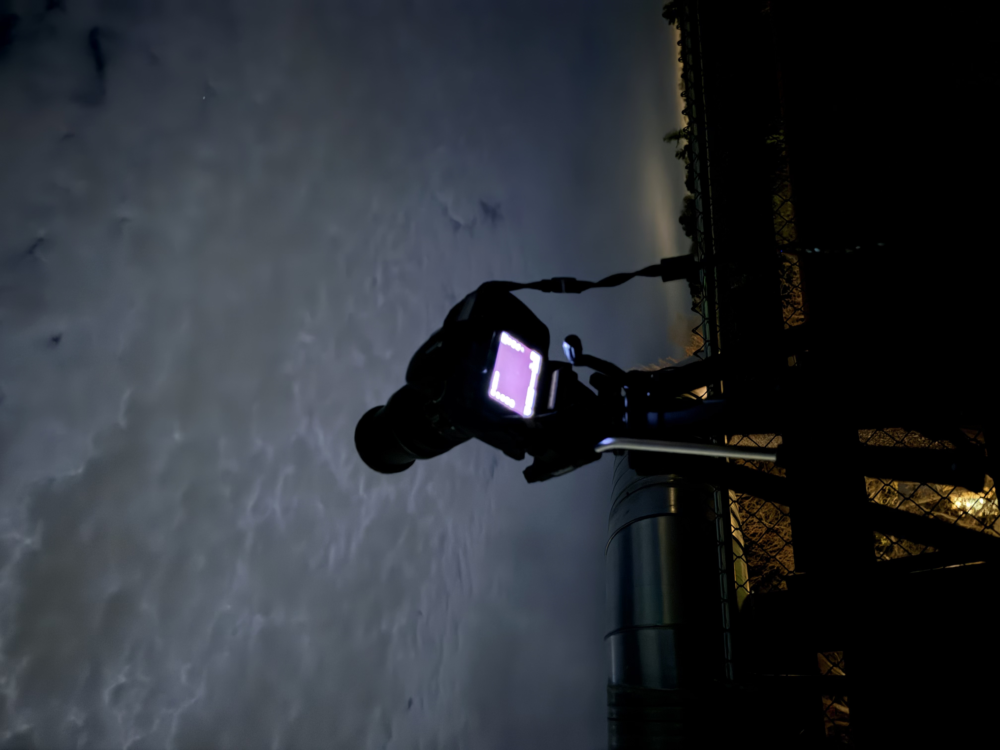
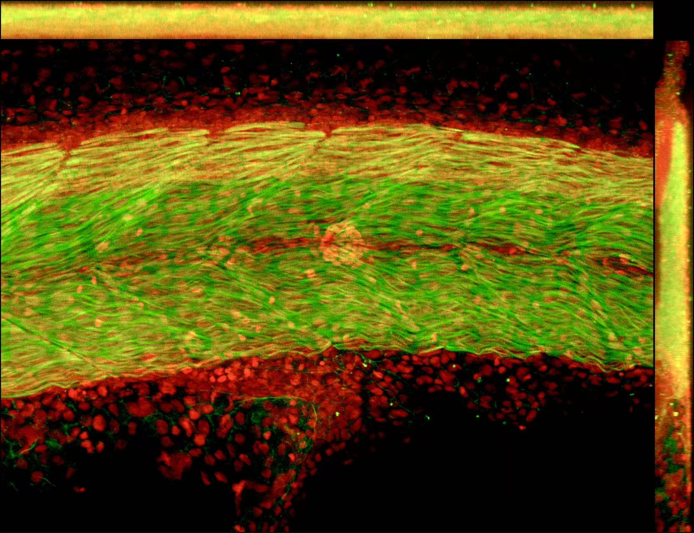

2025.09 Present
Smith College
Northampton, MA · BA · 神经科学与计算机科学专业 · GPA 3.96/4.0
相关课程：神经科学基础、临床神经科学、基因组学与遗传学、分子细胞系统、线性代数、数据科学导论、计算机科学导论。
INFJ，习惯安静独处、喜欢幻想。白天在实验室里辨认细胞与数据，夜晚用胶片相机和二胡记录内心世界。



I notice the room before I speak in it. I keep score quietly, mostly with myself.

I notice the room before I speak in it.
Rest is not regression.
I keep score quietly, mostly with myself.
I would rather build something that helps than perform being helpful.
白天用显微镜看细胞，夜晚用望远镜看星星——同一种耐心，指向两个不同的尺度。这些是我自己拍的星轨、月亮和一次次架好望远镜的深夜。






设计并执行实验，研究 metrn/metrn-like 敲低对斑马鱼脊髓放射状胶质细胞发育的影响；用 HCR、免疫染色和共聚焦显微镜量化空间基因表达模式，并在 Smith College Celebrating Collaborations 海报展中代表团队展示研究成果。
Summer Undergraduate Research Fellowship：研究 Metrn/MetrnL 缺失斑马鱼的肌肉发育，进行全胚胎与冷冻切片免疫染色标记 MTJ、NMJ，用 Fiji 与 R 量化肌纤维方向。
通过终端开发工具对 App 内嵌逻辑进行逆向分析，识别数据隐私漏洞与技术不一致之处；正与团队合作撰写学术论文（撰写中）。
基于假设驱动的研究设计，探究 EEG 信号与消费者购买意图之间的关系；用 Python 完成数据采集、预处理、统计分析与可视化的完整流程，结合 LLM 辅助文本分析，撰写并展示研究论文。
参与环境监测方向的 AI 河道巡检项目实习，整理识别青苔、管道渗漏、水渍等视觉异常的技术指标，参与研发团队讨论并协助撰写项目文档。
开发并比较 Sequential、CNN 与 Transfer Learning 模型，使用数据增强并分析模型中潜在的种族与性别偏见。
相关课程：神经科学基础、临床神经科学、基因组学与遗传学、分子细胞系统、线性代数、数据科学导论、计算机科学导论。
研究 metrn/metrn-like 敲低对斑马鱼脊髓放射状胶质细胞发育的影响，使用 HCR、免疫染色与共聚焦显微镜量化基因表达模式；代表 Meteorin 团队在 Celebrating Collaborations 海报展中展示研究成果（约 8 小时/周）。
Android 逆向工程，分析数据隐私漏洞，合作撰写学术论文（撰写中）。
研究 Metrn/MetrnL 缺失斑马鱼的肌肉发育，进行全胚胎与冷冻切片免疫染色（MTJ、NMJ 标记物），用 Fiji 与 R 采集分析荧光图像并量化肌纤维方向。
参与 AI 河道巡检项目，整理识别青苔、管道渗漏、水渍等视觉异常的技术指标，参与研发团队讨论并协助撰写项目文档。
探究 EEG 信号与消费者购买意图的关系，用 Python 完成数据采集、预处理、统计分析与可视化，结合 LLM 辅助文本分析，撰写并展示研究论文。
准备实验试剂与器材，协助本科生实验课程（每周 6-7 小时）。
参与 293T 细胞病毒包膜实验、质粒扩增提取转化转染，应用 PCR 与凝胶电泳验证遗传组分。
用 R Studio 对医院寿命数据应用线性回归与概率分布理论，合作分析乌拉圭经济状况与健康因素的相关性。
开发并比较 Sequential、CNN、Transfer Learning 模型用于肺炎自动检测，分析模型中的偏见问题。
设计活动海报、宣传册与采访视频；管理 Instagram 内容以提升校园参与度，统筹宣传团队协作与发布节奏。
负责摄影、视频制作、稿件编辑；联合发起 "The Diary" 摄影义卖，协调五所国际学校为学生公益项目筹款；组织首届校园短片电影节。
组织校园生物多样性记录、环保产品制作与蔬菜种植等月度活动。
完整联系方式（含电话）请见 PDF 简历内
无论是关于神经科学研究、数据项目，还是单纯想聊聊摄影和音乐，都欢迎写信给我。